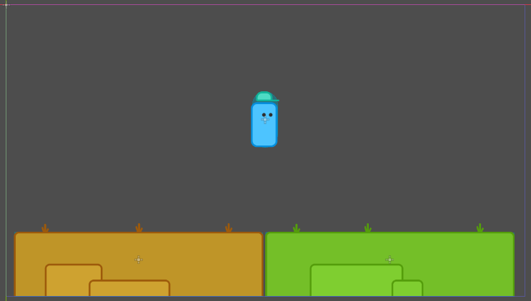
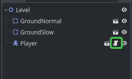
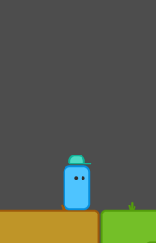
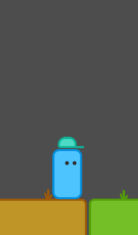

Pada tutorial ini kita akan belajar menggerakan karakter player agar dapat berjalan, jatuh dan melompat.
🖐 Persiapan
Kita akan mulai dengan mendownload Project Template terlebih dahulu
Didalam Project Template sudah berisi node Player dan Ground. Node Ground digunakan untuk tempat node Player Berpijak nantinya.

✍️ Mulai
-
Setelah Project Template terbuka, klik icon script pada node Player 
-
Didalam script node Player buat variable seperti berikut
@export var movespeed := 10000.0 @export var jump_force := 1000.0 @export var gravity := 3000.0 @export var direction := 0.0
Saya akan menjelaskan kegunaan dari variable diatas
movespeedmengatur kecepatan gerak playerjump_forcemengatur kekuatan / ketinggian player saat melompatgravitymengatur gravitasi playerdirectiondigunakan sebagai penanda yang menampung nilai dari hasil Input (arah kiri dan kanan) dari user dan juga mengatur arah gerak player
Catatan: Nilai variabel
movespeed,jump_forcedangravitytergantung pada ukuran Sprite. Kamu harus menyesuaikan nilai variabelnya supaya lebih responsif.
-
Tambahkan beberapa baris kode berikut
func _physics_process(delta: float) -> void: move_and_slide() if not is_on_floor(): velocity.y += gravity * delta direction = Input.get_axis("move_left", "move_right") velocity.x = (movespeed * direction) * delta if direction: $Sprite2d.flip_h = direction <= 0.0 if Input.is_action_just_pressed("jump") and is_on_floor(): velocity.y = -jump_force if Input.is_action_just_released("jump") and velocity.y < -jump_force/2: velocity.y = -jump_force/2
Saya akan menjelaskan apa saja maksud dari barisan kode diatas, kita mulai dengan kode dibawah
func _physics_process(delta: float) -> void:
Fungsi akan selalu dipanggil selama game berjalan, secara default fungsi ini dipanggil 60 kali per detik. pada fungsi ini kita akan melakukan perhitungan fisika. Parameter delta pada fungsi _physics_process adalah waktu antara setiap frame, kita dapat mengkalikan kecepatan gerak node Player dengan parameter ini, sehingga node Player bergerak berdasarkan piksel per detik, bukan piksel per frame.
Selanjutnya kita tambahkan sebuah fungsi dibawah yang akan mengkalkulasi perhitungan dari variable velocity, sehingga node Player bisa bergerak dari posisi sekarang ke posisi lainnya.
move_and_slide()
Kita akan membuat node Player memiliki gravitasi, jika node Player tidak menyentuh tanah / pijakan maka node player akan bergerak ke bawah dan akan berhenti sampai dia menemukan tanah / pijakan, dengan itu kita menggunakan kode berikut.
if not is_on_floor():
velocity.y += gravity * delta

Sekarang kita mengatur arah gerak untuk node Player, agar nanti node Player bisa bergerak ke arah kanan dan kiri. Pada argument Input.get_axis(... akan mengkalkulasi nilai input dari user ketika user menekan key dengan alias move_left atau move_right kemudian nilai tersebut kita tetapkan ke variabel direction, dengan hal itu kita sudah mengatur arah gerak untuk node Player.
direction = Input.get_axis("move_left", "move_right")
Setelah arah gerak kita atur, selanjutnya kita membuat node Player bisa bergerak / berjalan horizontal dengan cara mengkalikan variabel movespeed, direction dan delta dan hasil nilainya kita tetapkan ke variable velocity.x, dengan itu kita mendapatkan nilai besaran yang kita butuhkan untuk bisa bergerak / berjalan secara horizontal.
velocity.x = movespeed - direction - delta;
Selanjutnya kita mengatur posisi texture sesuai dengan arah gerak node Player. Kita buat kondisi jika variabel direction bukan sama dengan 0.0, kemudan untuk nilai $Sprite2d.flip_h kita tetapkan nilai dengan kondisi jika direction kurang dari 0.0 maka $Sprite2d.flip_h bernilai true.
Note:
.flip_hadalah property dari node Sprite2d
if direction:
$Sprite2d.flip_h = direction <= 0.0
Sekarang saatnya kita membuat node Player bisa melompat dengan cara, membuat sebuah kondisi dimana saat user menekan key dengan alias jump dan posisi node Player berada pada tanah / sedang berpijak, maka kita menetapkan variabel velocity.y dengan nilai negatif jump_force agar posisi node Player bergerak keatas.
if Input.is_action_just_pressed("jump") and is_on_floor():
velocity.y = -jump_force

Oke saya rasa sampai disini node Player kita sudah bisa bergerak sesuai dengan harapakan kita sebelumnya yaitu bisa berjalan, jatuh dan melompat.
Semoga tutorial kita kali ini dapat teman-teman pahami dan dipraktekan dengan baik. Terimakasih telah membaca dan jangan lupa untuk mempraktekkannya.